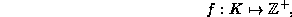
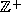
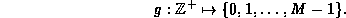

Data Structures and Algorithms
with Object-Oriented Design Patterns in C++
Data Structures and Algorithms
with Object-Oriented Design Patterns in C++The preceding section presents methods of hashing integer-valued keys. In reality, we cannot expect that the keys will always be integers. Depending on the application, the keys might be letters, character strings, pointers, or even more complex data structures such as Associations or Containers.
In general given a set of keys, K, and a positive constant, M, a hash function is a function of the form
In practice is it convenient to implement the hash function h as the composition of two functions f and g. The function f maps keys into integers:

where  is the set of non-negative integers.
The function g maps non-negative integers into  :
:

Given appropriate functions f and g, the hash function h is simply defined as the composition of those functions:

I.e., the hash value of a key x is given by g(f(x)).
By decomposing the function h in this way,
we can separate the problem into two parts:
The first involves finding a suitable mapping from
the set of keys K to the non-negative integers.
The second involves mapping non-negative integers into the interval [0,M-1].
Ideally, the two problems would be unrelated.
I.e., the choice of the function f would
not depend on the choice of g and vice versa.
Unfortunately, this is not always the case.
However, if we are careful,
we can design the functions in such a way
that  is a good hash function.
is a good hash function.
The hashing methods discussed in the preceding section deal with integer-valued keys. But this is precisely the domain of the function g. Consequently, we have already examined several different alternatives for the function g. On the other hand, the choice of a suitable function for f depends on the characteristics of its domain.
In the following sections, we consider various different domains (sets of keys) and develop suitable hash functions for each of them. Each domain considered corresponds to some type or class T. For each type T, we present the definition of the function Hash declared according to the following prototype:
typedef unsigned int HashValue; HashValue Hash (T);Notice, we have chosen to represent the range of hash values using the type unsigned int.
 Copyright © 1997 by Bruno R. Preiss, P.Eng. All rights reserved.
Copyright © 1997 by Bruno R. Preiss, P.Eng. All rights reserved.